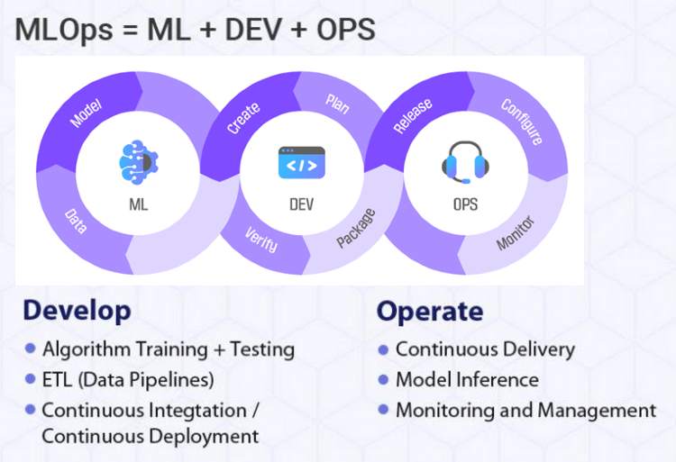
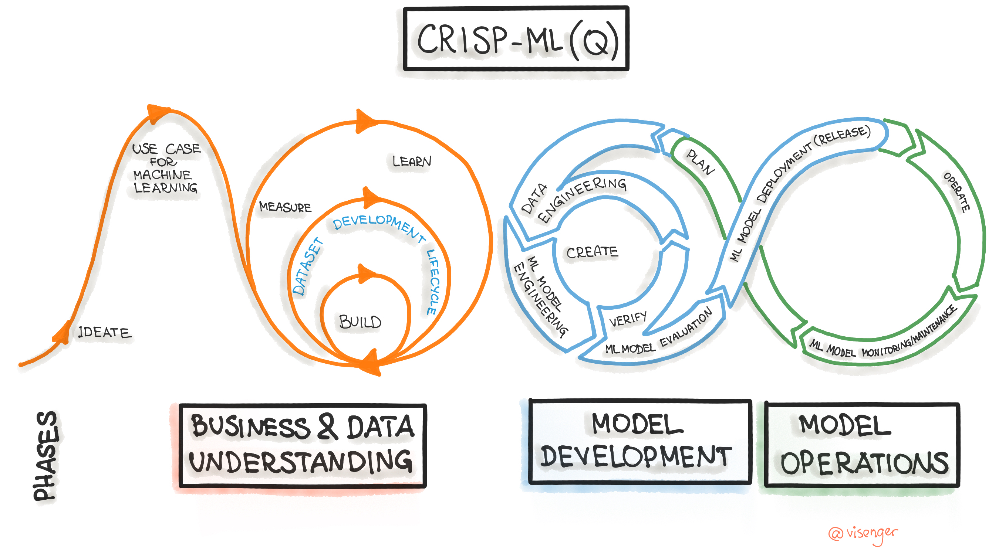
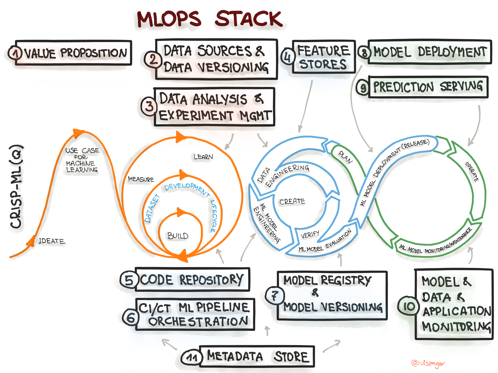
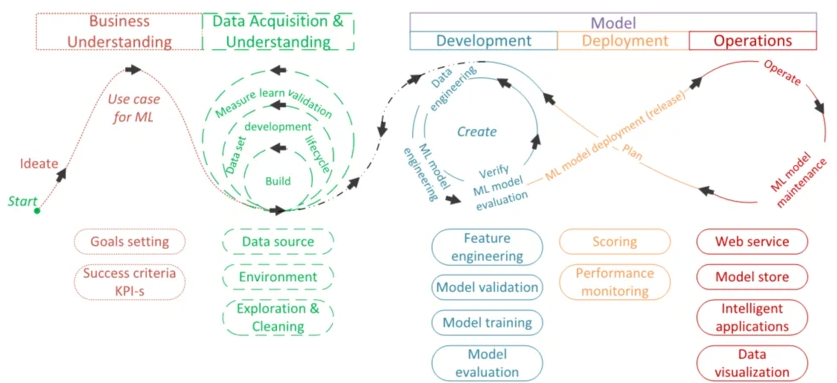
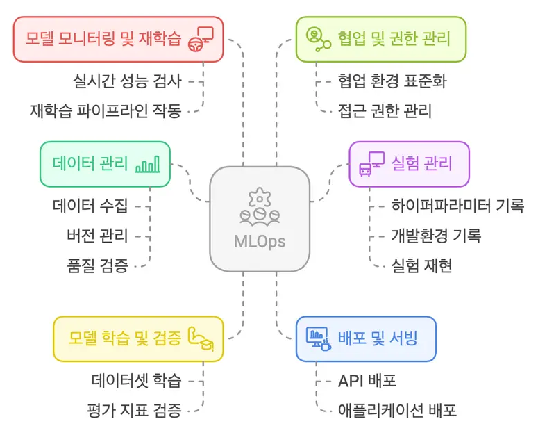
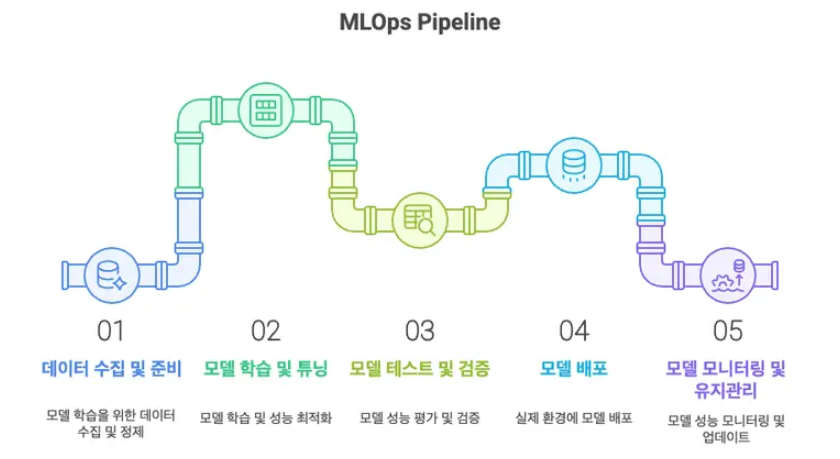

AI 프로젝트의 안정적인 성공을 위한 구축 가이드
Machine Learning + Operations
머신러닝 모델의 안정적인 개발(Dev)과 운영(Ops)을 통합하여 전체 수명 주기를 효율적으로 관리하기 위한 프레임워크입니다.
DevOps 철학을 ML 워크플로에 적용하여 데이터가 변하면 모델도 변해야 하고, MLOps는 이 순환을 자동화합니다.
자동화된 파이프라인으로 반복 작업을 제거하고 배포 속도를 가속화합니다.
팀 사일로를 제거하고 협업 구조를 표준화하여 생산성을 높입니다.
한 번의 학습이 아닌, 지속적인 순환으로 모델을 운영합니다.

MLOps = ML + Dev + Ops
유스케이스 정의(Ideate) → KPI 설정 → 데이터 소스 탐색. 비즈니스 목표와 ML 목표를 연결합니다.
데이터 엔지니어링 → ML 모델 엔지니어링 → 모델 평가(Verify). Build-Measure-Learn 반복 루프.
ML 모델 배포(Release) → Operate → 모니터링/유지보수. 지속적 품질 관리와 재학습 루프 포함.

CRISP-ML(Q) 단계 흐름도
개념 구조와 구축 관점을 함께 보여주는 다이어그램
비즈니스 가치와 ML 목표 정렬
데이터 소스 관리 및 버전 추적
탐색적 분석 및 실험 추적
피처 재사용 및 서빙 레이어

MLOps Stack 구성요소

Business Understanding 부터 Operations 까지의 단계별 연결
코드 버전 관리 및 협업
자동화된 학습 파이프라인
모델 아티팩트 및 메타데이터 관리
배포, 예측 서빙, 성능 모니터링, 메타데이터 스토어

수집, 버전 관리, 품질 검증으로 재현성을 확보합니다.
하이퍼파라미터, 환경, 결과를 추적하여 반복 학습을 관리합니다.
학습, 평가, 비교 검증으로 신뢰 가능한 모델만 운영에 반영합니다.
API와 애플리케이션 형태로 실제 환경에 안정적으로 배포합니다.
성능 저하를 감지하고 필요 시 재학습 파이프라인을 동작시킵니다.

모델 학습을 위한 데이터 수집, 정제, 품질 확보 단계입니다.
실험 관리와 하이퍼파라미터 조정으로 성능을 향상합니다.
성능 평가와 기준 충족 여부를 검토하여 배포 가능성을 판단합니다.
실서비스 환경에 모델을 반영하고 서빙 인프라를 연결합니다.
운영 성능을 감시하고 업데이트 및 재학습을 지속 수행합니다.
워크플로우 자동화로 배포 속도를 높이고, 대용량 데이터 기반 운영까지 확장할 수 있습니다.
공통 프레임워크를 통해 팀 간 소통 비용을 줄이고 수동 작업을 자동화합니다.
정확성과 일관성을 유지하고 데이터 변화에 대응해 예기치 않은 성능 저하를 줄입니다.
| 구분 | DevOps | MLOps | LLMOps |
|---|---|---|---|
| 운영 대상 | SW 애플리케이션 | 머신러닝 모델 | 대규모 언어 모델 (LLM) |
| 대상 데이터 | 코드, 설정 파일 | 정형/구조화 데이터 | 프롬프트, 벡터 DB |
| 변화 원인 | 코드 수정 (Bug fix) | 데이터의 변화 (Drift) | 프롬프트/파인튜닝 |
| 기술 스택 | CI/CD, IaC | CI/CD for ML, Feature Store | 추론 최적화, GPU 관리 |
목표: 데이터 파이프라인의 품질과 속도 향상 · 핵심: ETL, 데이터 신뢰성 확보
목표: AI로 IT 인프라 운영 최적화 · 핵심: 로그 분석, 이상 탐지 및 자동 대응